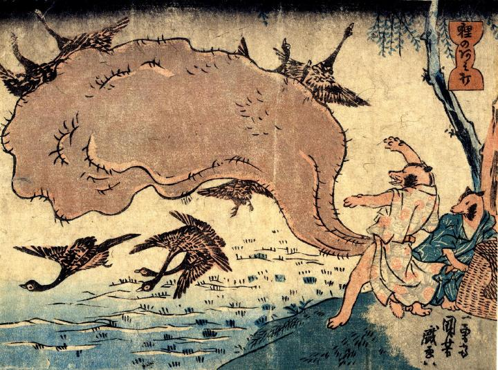

投網のように陰嚢を広げて投げる狸。狙っているのは稲刈りが済んだ田に休んでいた雁か。
著作者：一勇斎国芳／出典：親書誌：U426_nichibunken_0256：狸のあみ打 狸のおふらい；タヌキノアミウチタヌキノオウライ／日付：2011／資源識別子：U426_nichibunken_0256_0001_0000
Copyright (c)2010- International Research Center for Japanese Studies, Kyoto, Japan. All rights reserved.